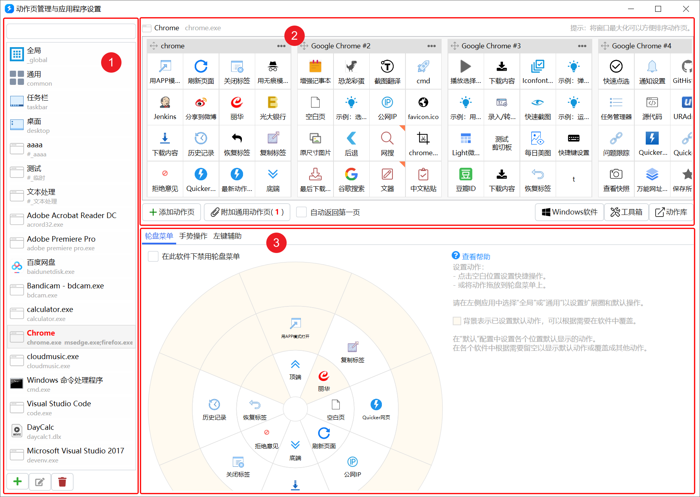
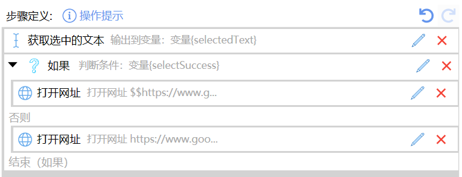
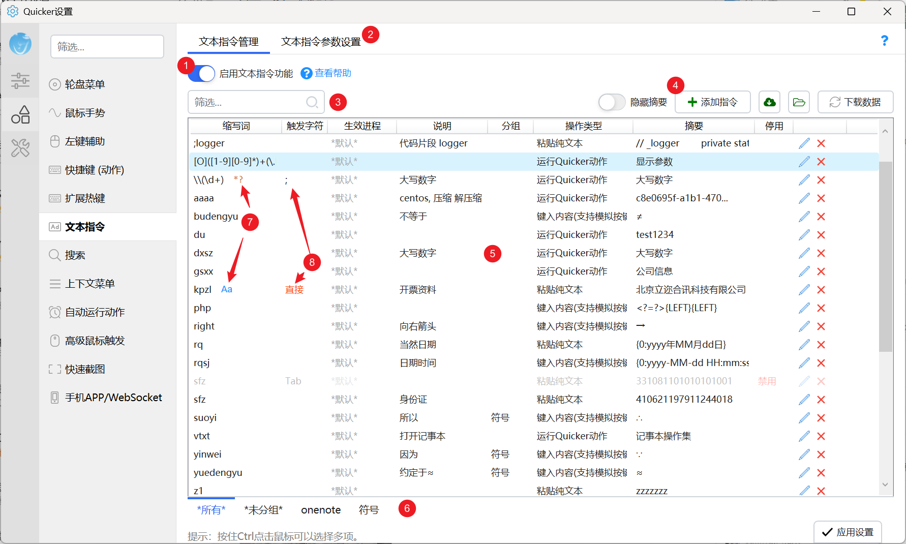
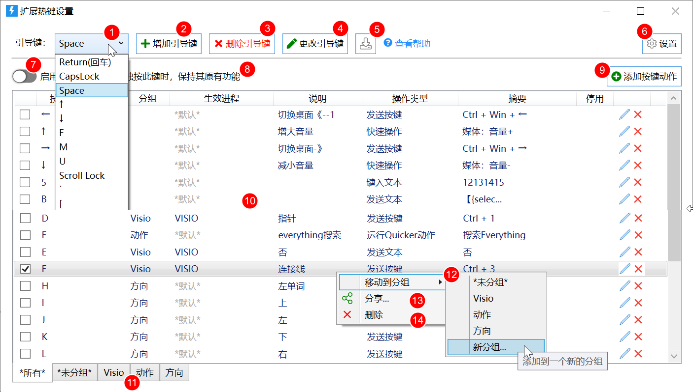

用了 Quicker 三年才发现的 5 个冷门功能，藏得真深
Quicker 远不止一个弹出面板——数据同步的事件触发、组合动作的流程控制、文本指令的正则匹配、动作快捷键的四种触发路径，这些隐藏设置能把你的效率再翻一倍。
你以为 Quicker 就是个右键弹出的快捷面板？把常用动作排一排、点一下就完事？其实我用了快三年才发现，它真正的威力藏在那些翻到三级菜单才找得到的选项里——连它的官网都没专门设"隐藏功能"板块，官方从来不写这种合集，全靠自己摸。安装包直接从下载拿就行，不用到处找渠道。
今天把我挖出来的五个私货摊开讲，每个都讲清楚在哪、怎么开、什么人真的用得上。
1. 数据同步是事件驱动的，不是实时的
很多人跟我一样，第一次登账号改完配置就切到另一台电脑，发现面板还是老样子，以为"同步坏了"。其实它根本不是实时同步——官方文档白纸黑字写了三个同步时机：
- 配置修改后 30 秒内
- 软件启动时
- 网络恢复时（断网重连那种）
除此之外它"不盯着"云端。所以你在 A 电脑改完，秒切 B 电脑打开是旧的，很正常。等个几十秒，或者重启一下软件，就对上了。
这个机制反过来也有用——多台电脑同时改配置的场景下，它不会互相覆盖搞乱，只按各自的时机去拉最新版。

还有个冷知识：同步的只是配置类数据（面板结构、动作定义、外观），运行时产生的图标缓存、日志、接收的图片这些本地杂项根本不上云。主菜单 → 工具 → "应用数据文件夹"里能看到完整清单，路径固定在 %LOCALAPPDATA%\Quicker。所以"我把应用数据整个拷过去"这种操作没意义——你拷过去的都是缓存，真正要同步的那些配置它自己会管。
手动同步和查看历史在主菜单的数据同步子项里——排查"哪台电脑改了什么"的时候翻一下历史记录特别好用。
2. 组合动作才是真正的自动化引擎
基础动作管"一步做完"（启动软件、打开网址、发一段文字），但你要是想让它干"先取选中的文字、判断有没有、有的话拼网址打开搜索、没有就开首页"这种活——那就是组合动作的地盘了。
它的逻辑很直白：像搭积木一样把模块按顺序拼起来，用变量在模块之间传数据。上面那个"有选中搜选中、没选中开首页"的搜索动作，拆成三步：获取选中文本 → 判断 → 分支执行。这三步已经把组合动作的三要素凑齐了：步骤（模块）、参数、分支逻辑。
官方首页把组合动作的用途归成三层，我实际感受最深的是中间那层——独立功能。比如截图 OCR、聚合翻译、归档同类文件，这些成品大多是社区里别人写好的组合动作，装一个就能用，完全不用自己写。动作库里现在挂着八千多个，不会写真的没关系。

后来去Quicker文档翻了一下才发现，新手入门别跳过"Hello World"教程，跟着做完第一个就能摸到套路。调试功能也藏在编辑器里，单步执行 + 变量观察，跟写代码差不多但不用编译。
3. 文本指令：把缩写自动展开成整段
给打字流用户准备的。你写文档、回消息的时候手一直在键盘上，连弹面板都嫌麻烦——这时候打一个缩写，按 Tab（或者你设的触发字符），自动展开成整段文字。
能用在哪？官方给的示例场景我几乎全在用：
- 地址、落款、话术模板，缩写一敲整段出来——日报周报写签名栏的时候特别爽；
- 日期时间类缩写，
dt展开成今天的日期，tm展开此刻时间； - 生僻符号、代码片段，挂上顺手的缩写；
- 甚至能直接触发面板里的动作——不止打字。
有个官方没强调的妙用：在 Word 里把 # + 空格 转成"标题 1"、## + 空格 转成"标题 2"，用键盘复刻 Markdown 的写作体验。设好之后你会发现改文档速度快得离谱。

设置在主菜单的"文本指令"窗口里。规则列表支持正则匹配和忽略大小写，也能单条设不同的触发字符或者"直接触发不按键"。某软件里不想让缩写生效就加黑名单——触发字符在少数编辑器里会"吃掉"一次按键，遇到兼容性问题改触发字符就行，默认 Tab 不一定适合所有人。
注意：这是专业版功能，免费版限制 10 条规则。
4. 同一个动作有四种触发路径，别只用弹面板
大多数人只用"弹面板点按钮"这一种，但 Quicker 给每个动作准备了四种触发方式，选对了效率差一倍：
| 触发路径 | 什么时候用 |
|---|---|
| 弹面板点按钮 | 一般场景，鼠标党 |
| 全局快捷键 | 键盘流高频动作（免费版限 3 个） |
| 轮盘 / 手势 | 方向性肌肉记忆，鼠标划一下就触发 |
| 搜索框输入 | 低频动作 + 需要带参数调用的时候 |
我实际用下来，三种场景分别对应不同路径：
- 每天几十次的操作（截图 OCR、翻译）→ 绑全局快捷键，手不离键盘；
- 常用但不需要天天按的 → 弹面板点；
- 低频但要带参数的 → 搜索框输入，比如搜某个特定关键词走 Google。
快捷键选的时候避开 Ctrl+C/V/S 这类通用组合，Alt+数字、Ctrl+Alt+字母 是甜点区。免费版三个名额别浪费，留给真正高频的。

排错提示：快捷键没反应时依次查——是不是被输入法、截图工具抢了 Alt 系？软件是不是还在运行（它的挂钩接管快捷键，退出就失效）？还有安全软件有没有拦键盘挂钩。
5. 扩展热键远不止快捷键
前面说的"动作快捷键"是给单个动作绑一个全局热键，3 个名额。但如果你想要几十上百个键盘组合，那就是扩展热键的领域了——官方管它叫 PowerKeys，藏在设置窗口的键盘触发分类下面。
这个功能允许你把任意按键组合映射到 Quicker 的任意动作或功能，而且分组管理、支持条件触发（只在某软件里生效）。跟文本指令、动作快捷键一起构成了完整的键盘触发体系。
一个坑：同步的身份凭据有保质期
内外网隔离的环境里，官方给了变通方案——手机热点先登录同步，或者从联网电脑复制应用数据文件夹。但复制数据里的身份凭据有效期只有 100 天，过期之后就不能再同步了。走这条路的话记得定期联网续一次命，不然某天开机发现所有配置都丢了还以为是软件 bug。
还有个小提醒：扩展热键和文本指令都是专业版功能，免费版各有限制。免费版先把面板 + 三个动作快捷键用熟，觉得真的离不开再考虑付费——别上来就纠结功能全不全，先跑起来。
收尾
把它用透的意思不是把所有功能都开一遍，而是找到自己的触发习惯：你是鼠标党还是键盘流？一天几十次的高频操作是哪几个？给每个场景选对路径，Quicker 才会真的变成"你的"效率工具，而不是又一个放在角落吃灰的快捷面板。
上面聊到的那些隐藏功能，对应的完整资料我分别放在了三个代码仓库里方便查阅和备份：GitHub、Gitee 和 GitCode，哪个能打开就看哪个。